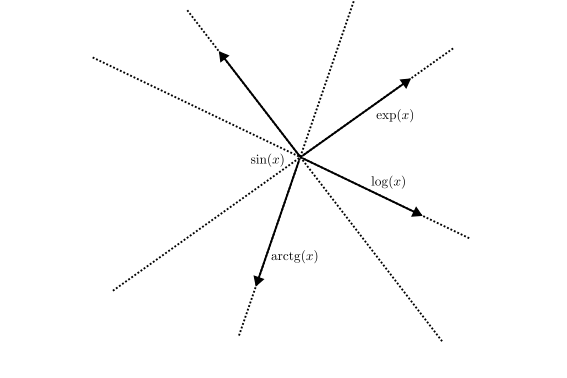
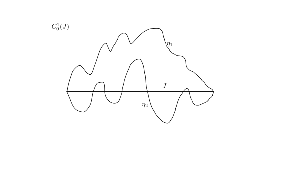
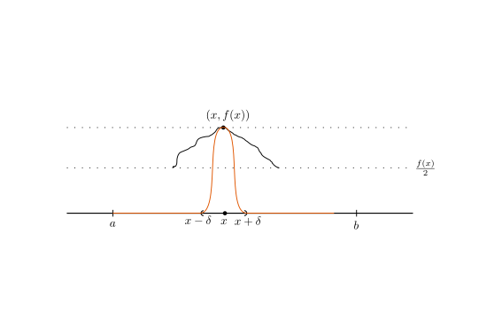

Mat3teden13
Table of Contents
1. Navadne diferencialne enačbe
1.1. Linearne diferencialne enačbe višjega reda
1.1.1. Izrek 7.18 (p.S.)
Če so \( y_1, \ldots, y_n \) linearne neodvisne rešitve enačbe \( \mathrm{L}y = 0 \), tedaj je partikularna rešitev (nehomogene) enačbe
\[ a_n y^{(n)} + a_{n-1} y_{(n-1)} + \ldots a_1 y' + a_0 y = f \]
podana z \( c_1 y_1 + \ldots + c_n y_n \), kjer je
\begin{equation} \label{eq:1} (c_1, \ldots, c_n)^T (x) = \int\limits_{x_0}^x \frac{f(\xi)}{a_n(\xi)} Y_n^{-1} (\xi) \,\mathrm{d }\xi \end{equation}in je \( Y_n^{-1} \) zadnji stolpec matrike \( Y^{-1} \), pričeme jer
\[ Y^{-1} = \begin{bmatrix} y_1 & \ldots & y_n \\ \vdots & \ddots & \vdots \\ y_1^{(n-1)} & \ldots & y_n^{(n-1)} \end{bmatrix} \]
Za skalarno funkcijo \( W(x) = \det Y(x) \) velja
\[ W(x) = W(x_0) e^{-\int\limits_{x_0}^x \frac{a_{n-1}}{a_n} (\xi) \,\mathrm{d }\xi} \]
1.1.2. Primer 7.18
Rešujemo enačbo
\[ (1 - \log x) y'' + \frac{1}{x} y' - \frac{1}{x ^2} y = \frac{1}{x ^2} = a_2 y ''' + a_1 y' - a_0 y = b, \ x > 0 \]
Rešitev št. 1 je za domačo nalogo. Rešitev št. 2, sistematična:
Imejmo (vnparej podani) rešitvi homogenega dela:
\[ y_1 = x \quad y_2 = \log x \]
Poiṡčimo partikularno rešitev \( y_p \). Vzamemo nastavek \ref{eq:1}
\[ y_p = c_1 y_1 + c_2 y_2 \]
kjer je
\[ (c_1, c_2)^T (x) = \int\limits_{x_0}^x \frac{b(\xi)}{a_2 (\xi)}\,\mathrm{d }\xi \]
kjer je \( Y_2^{-1} \) drugi stolpec matrike
\[ \begin{bmatrix} y_1 & y_2 \\ y_1 ' & y_2 ' \end{bmatrix} ^{-1} = \begin{bmatrix} x & \log x \\ 1 & \frac{1}{x} \end{bmatrix} ^{-1} = \frac{1}{1 - \log x} \begin{bmatrix} \frac{1}{x} & - \log x \\ -1 & x \end{bmatrix} \]
torej
\[ Y_2 ^{-1} (x) = \frac{1}{1 - \log x } \begin{bmatrix} - \log x \\ x \end{bmatrix} \]
Sledi
\begin{align*} (c_1, c_2)^T (x) &= \int\limits_{x_0}^x \frac{\frac{1}{\xi ^2}}{1 - \log \xi} \cdot \frac{1}{1 - \log \xi} \begin{bmatrix} - \log \xi \\ \xi \end{bmatrix}\,\mathrm{d }\xi \\ &= \int\limits_{x_0}^x \begin{bmatrix} \frac{- \log \xi }{\xi ^2 (1 - \log \xi) ^2} \\ \frac{1}{\xi (1 - \log \xi) ^2} \end{bmatrix}\,\mathrm{d } \xi \\ &= \left. \begin{bmatrix} - \frac{1}{\xi (1 - \log \xi) }\\ \frac{1}{1 - \log \xi} \end{bmatrix} \right|_{\xi = x_0} ^{\xi= x} \end{align*}Lahko vzamemo
\begin{align*} y_p &= c_1 y_1 + c_2 y_2 \\ &= - \frac{1}{x(1 - \log x)} \cdot x + \frac{1}{1 - \log x} \log x = -1 \end{align*}Denimo, da je podan le \( y_1 = x \). Kako dobimo \( y_2 \)?
Odgovor:
\begin{align*} W &= \begin{bmatrix} y_1 & y_2 \\ y_1 ' & y_2 ' \end{bmatrix} \\ &= \begin{bmatrix} x & y_2 \\ 1 & y_2' \end{bmatrix} = xy_2 ' - y_2 \\ &= \left( \frac{y_2}{x} \right) ' \cdot x ^2 \end{align*}Hkrati je za \( n = 2 \)
\begin{align*} W(x) &= W(x_0) e^{- \int\limits_{x_0}^x \frac{a_1 (\xi) }{a_2 (\xi)}\,\mathrm{d } \xi} \\ &= W(x_0) e^{- \int\limits_{x_0}^x \frac{1}{\xi(1 - \log \xi)}\,\mathrm{d }\xi} \\ &= W(x_0) e^{ \left. \log \left| 1 - \log \xi \right| \right|_{\xi = x_0}^{\xi = x}} \\ &= W(x_0) \frac{\left| 1 - \log x \right|}{ \left| 1 - \log x_0 \right|} \end{align*}Iz česar sledi
\[ W(x) = \frac{W(x_0)}{\left| 1 - \log x_0 \right|} \cdot \left| 1 - \log x \right| \]
Lahko vzamemo \( W = 1 - \log x \). Sledi
\[ \left( \frac{y_2}{x} \right)' \cdot x ^2 = W = 1 - \log x \]
\begin{align*} \left( \frac{y_2}{x} \right) ' &= \frac{1 - \log x}{x ^2} \\ &= \left( \frac{\log x}{x} \right)' &\implies \frac{y_2}{x} = \frac{\log x}{x} + C \end{align*}Če vzamemo \( C = 0 \), dobimo prej dobljeni rezultat \( y_2 = \log x \)
1.2. Iskanje rešitev homogene enačbe s konstantnimi koeficienti
Naj bo \( n \in \mathbb{N} \), \( a_1, \ldots, a_n \in \mathbb{R} \). Obravnavamo enačbe
\begin{equation} \label{eq:2} \sum\limits_{j=0}^n a_j y^{(j)} = 0 \end{equation}1.2.1. Definicija 7.11 (p.S.)
Karakteristični polinom diferencialne enačbe \ref{eq:2} je definirana kot
\[ p(\lambda) = \sum\limits_{j= 0 }^n a_j \lambda^j \]
Karakteristična enačba za \ref{eq:2} pa je \( p(\lambda) = 0 \)
1.2.2. Trditev 7.19 (p.S.)
Če je \( \lambda \) ničla karakterističnega polinoma \( p \), tedaj je \( y(x) = e^{\lambda x} \) rešitev diferencialne enačbe \ref{eq:2}.
Dokaz: Uporabimo \( y^{(j)} (x) = \lambda^j e^{\lambda x} \). Sledi
\begin{align*} \sum\limits_{j=1}^n a_j y^{(j)}= p(\lambda) e^{\lambda x} = 0 \\ p \left( \frac{\mathrm{d} }{\mathrm{d} x} \right) = 0 \end{align*}1.2.3. Primer
- \( y'' + 2y' + y = 0 \)
Iz tega sledi, da je \( \lambda = -1 \) ničla za \( p \) in \( y(x) = e^{-x} \) je (ena) rešitev enačbe.
- \( y'' + 3y ' + 2y = 0 \)
Ničli za polinomi \( p \) sta \( \lambda= -1, -2 \), kar pomeni, da sta rešitvi
\( y(x) = e^{-x}, \ y= e^{-2x} \)
\( y''' + 3y'' + 3y' + y = 0 \)
Rešitve so \( \lambda = -1 \) (trojna ničla), kar pomeni da je \( y = e^{-x} \) ena rešitev.
1.2.4. Trditev 7.20
Imejmo enačbo
\begin{equation} \label{eq:3} a_n y^{(n)} + \ldots + a_1 y' + a_0 y = 0 \end{equation}Če je pripradajoči karakteristični polinom enak
\[ a_n (\lambda - \lambda_1)^{k_1} \ldots (\lambda - \lambda_m)^{k_m} \]
tedaj bazo prostora rešitev enačbe \ref{eq:3} tvorijo funkcije
\begin{align*} e^{\lambda_1 x}, \ xe^{\lambda_1 x}, &\ldots, \ x^{k_1 - 1}e^{\lambda_1 x} \\ &\vdots \\ e^{\lambda_m x}, \ x e^{\lambda_m x}, &\ldots, x^{k_m - 1} e^{\lambda_m x} \end{align*}Dokaz: Izpuščen zaradi primanjkovanja časa, je pa na voljo v spletni učilnici.
1.2.5. Zgled 7.19
Rešujemo problem
\[ y'' + y = x \]
Partikularna rešitev je \( x \). Homogena enačba je
\[ y' ' + y = 0 \]
Karakteristična enačba je
\[ \lambda ^2 + 1 = (\lambda - i)(\lambda + i) = 0 \]
Iz česar sledi, da sta rešitvi
\begin{align*} y_1 &= e^{ix}\\ y_2 &= e^{-ix} \end{align*}Ker imam enačba realne koeficiente, jo rešita tudi \( \Re y_1, \Im y_1 \)
1.3. Eulerjeva diferencialna enačba
To je problem primer linearne diferencialne enačbe višjega reda, in sicer
\begin{equation} \label{eq:4} \sum\limits_{j= 0}^n a_j x^j y^{(j)} (x) = b(x), \ b \in \mathbb{R} \end{equation}Za \( s = -x \) velja
\[ \sum\limits_{j= 0}^n a_j s_j w^{(j)} (s) = \sum\limits_{j=0}^n a^j x^j y^{(j)} (x) \]
če je \( w(s) := y(-x) \). Torej lahko enačbo obravnavamo za \( x > 0 \).
1.3.1. Trditev 7.21
Naj bo \( k \in \mathbb{N} \) in \( y: (0, \infty) \to \mathbb{R} \) razreda \( C^k \). Definiramo \( z \in C^k (\mathbb{R}) \) kot
\[ z(t) = y(e^t);\ t \in \mathbb{R} \]
Označimo operator (funkcijo, ki operira s funkcijo)
\[ D = \frac{\mathrm{d} }{\mathrm{d} t} \]
torej \( Dg = g' \). Tedaj velja, za vsak \( x = e^t > 0 \),
\[ x^k y^k (x) = \left[ D(D - I) (D - 2I) \ldots (D - (k-1)I) z \right](t) = p_k (D) \]
kjer je \( I \) identiteta (torej \( Ig = g \))
Komentar:
- \( p_1 (D) z = D z = \dot{z} \)
- \( p_2 (D) z = \left[ D (D- I) \right] z = \left[ D ^2 - D \right] z = \ddot{z} - \dot{z} \)
- \( p_3 (D) = \left[ D (D-I)(D- 2I) \right]z = [D ^3 - 3D ^2 + 2D] z = \dot{\ddot{z}} - 3 \ddot{z} + 2 \dot{z} \)
Dokaz: Pri dokazu uporabimo matematično indukcijo (na \( k \)):
Za \( k = 1 \) je leva stran, ki jo označimo z \( L \)
\[ L = x y'(x) = e^t y'(e^t) \]
Desna stran označena z \( D \) pa je
\[ D = \left[ p_1(D) z \right] (t) = \dot{z} (t) = \frac{\mathrm{d} }{\mathrm{d} t} z(t) = \frac{\mathrm{d} }{\mathrm{d} t} y(e^t) = y' \left( e^t \right) \cdot e^t \]
Če velja za \( k \), potem velja \( k + 1 \). Denimo, da zveza velja za neki \( k \in \mathbb{N} \). Nanjo deluje z operatorjem
\[ D - Ik: \phi \mapsto \dot{\phi} - k\phi \]
S tem desna stran postane to, kar si želimo \( \left( \left[ p_{k + 1} (D) z \right](t) \right) \).
Razpiši \( p_{k+1} (D) \) in primerjaj z \( p_k \), da vidiš, kako smo dobili operator \( D - Ik \)
Leva stran
\begin{align*} \left[ e^{kt} y^{(k)} \left( e^t \right)\right] \dot{} - k \left[ e^{kt} y^{(k)} (e^t) \right] &= \left( e^{kt} \right) \dot{} y^{(k)} (e^t) - k e^{kt} y^{(k)} (e^t) + \left( e^{kt} \right) \left[ y^{(k)} \left( e^{(t)} \right) \right] \dot{} \\ &= e^{kt} \cdot k y^{(k) (e^t)} - k e^{kt} y^{(k)} (e^t) + e^{kt} y^{(k+1)} \left( e^t \right) \cdot e^t \\ &= 0 + \left( \left[ p_{k+1} (D) z \right] (t) \right) \end{align*}1.3.2. Posledica
Eulerjeva enačba
\[ \sum\limits_{j=1}^n a_j x^j y^{(j)} (x) = b(x), \ x> 0 \]
ob substituciji \( z(t) = y \left( e^t \right) \) postane linearna enačba
\[ \left[ \sum\limits_{k=0}^n a_k p_k (D) \right] z(t) = b(e^t) \]
1.3.3. Primer
Rešujemo primer
\[ x ^2 y'' 0 3 xy' + 3y = 1 \]
Z \( z(t) = y(e^t) \) dobimo
\begin{align*} 1 \cdot p_2 (D) z - 3 p_1 (D) z + 3z &= 1\\ \ddot{z} - \dot{z} - 3 \dot{z} + 3z &= 1 \\ \ddot{z} - 4 \dot{z} + 3z = 1 \end{align*}Karakteristični polinom je tako
\[ \lambda ^2 - 4 \lambda + 3 = (\lambda - 1) (\lambda - 3) \]
Iz tega sledi, da je homogena rešitev
\[ z_h (t) = C e^t + D e^{3t} \] Partikularna rešitev je \( z_p = \frac{1}{3} \)
Torej splošna rešitev je
\[ z(t) = y(e^t) = \frac{1}{3} + Ce^t + D e^{3t} \]
in tako je rešitev za \( y \) za
\[ y(x) = \frac{1}{3} + Cx + Dx ^3 \]
2. Variacijski račun
Prevedeno na analizo 1: iščemo kandidate/funkcije, ki ustrezajo pojmu stacionarnih točk, vendar ne na realnem prostoru, ampak na nekem prostoru funkcij.
Od kje to izhaja? Kakor za večino stvari v matematiki, ste krivi vi, fiziki.
Naj bo \( L = L (u, v, w): \mathbb{R} ^3 \to \mathbb{R} \) dana funkcija. Obravnavamo funkcional (Dragi si to predstavlja kot funkcijo, ki slika iz nekega bolj kompleksnega prostora (vektorski prostor - prostor funkcij) v realna števila)
\[ I: y \mapsto \int\limits_a^b L(x, y' (x), y'' (x)) \,\mathrm{d x} \]
“Zanima nas, kje doseže ekstreme” (navednice v kontekstu mat3, ker ni najbolj korektno, kaj je to ekstrem, kje je ta ekstrem (pod kakšnimi pogoji, itd))
Funkciji \( L \) pravimo Lagrangeovo jedro oz. Lagragian. Želimo najti nek pogoj na \( L \) in \( y \), ki bo potreben pogoj za to, da ima \( I \) v \( y \) ekstrem.
(Za \( f: [a, b] \to \mathbb{R} \) je to pogoj \( f'(x) = 0 \).)
Ponavadi \( I \) definiramo na nekem podrazredu \( X \) v \( C^1 (J) \), kjer je \( J = [a,b] \).
Pogosto dodamo pogoj, da ima \( y \in X \) v krajiščih \( (a, b) \) predpisane vrednosti
\[ X = \left\{ y \in C^1(J);, y(a) = \alpha, \ y(b) = \beta \right\} \]
V tem primeru rečemo, da gre za nalogo s fiksnimi krajišči (sicer je z gibljivimi).
Definirati rabimo ekstrem funkcionala. Pri odvodu je ekstrem tam, kjer če gremo malo levo ali desno od ekstrema imajo točke enako ali večjo vrednost (za minimum). Pri funkcionalu pojmov levo/desno/gor/dol ne moremo iti (kako boš šel malo levo od \( \sin x \)?).
Pri definiciji odvoda, naredimo z \( f(x_0 + h) \) variacijo točke \( x_0 \):
\[ \lim_{n \to 0} \frac{f(x_0 + h) - f(x_0)}{h} \]
Če imamo funkcional \( I: X \to \mathbb{R}, \ X \subset C^1(J) \), je variacija funkcije oblike
\[ I(f_0 + h \epsilon ) - I(f_0) \]
2.1. Definicija 8.1
Lokalni ekstrem oz. ekstremala funkcije \( I \) definiramo kot funkcijo \( y\in X \), v kateri ima ekstrem v vsem smereh. To pomeni, da ima za vsako gladko funkcijo \( \eta \), za katero je \( y + \epsilon \eta \in X \) za dovolj majhne \( \epsilon \), na realnih številih (oz. na nekem odprtem intervalu v \( \mathbb{R} \) ) definirana funkcija
\[ \epsilon \mapsto I (y + \epsilon \eta) \]
ekstrem v točki \( 0 \).

Stacionarna “točka” funkcionala \( I \) je funkcija \( y \in X \), za katero velja, da je
\begin{equation} \label{eq:5} \left. \frac{\mathrm{d} }{\mathrm{d} \epsilon} I (y + \epsilon \eta) \right|_{\epsilon = 0} = 0 \end{equation}Zožamo npr. na premico \( \mathrm{exp} \) (glej sliko) in tam iščemo ekstrem (kar je pa je potem \( \mathbb{R} \to \mathbb{R} \)) in to naredimo v vseh smereh.
Želimo preprostejši pogoj za \( L, \ y \), ki bo potrebej pogoj za \ref{eq:5}. Temu pogoju pravimo Euler-Lagrangeov pogoj. Naj bo \( J \subset \mathbb{R} \) omejen zaprt interval. Označimo

\[ C_0^1 (J) = \left\{ \eta \in C^1(J); \ \left. \eta \right|_{\delta J} = 0 \right\} \]
Množici \( C_0^1 \) pravimo testne funkcije. Ničla v indeksu pove, da ima funkcija v krajišču vrednost 0.
[vstavi skico]
2.2. (Variacijski) Lema 8.1
Naj bo \( J = [a, b] \) kot prej in \( f \in C(J) \). Če velja
\begin{equation} \label{eq:7} \int\limits_J^{} f \eta \,\mathrm{d } = 0, \ \forall \eta \in C_0^1 (J) \end{equation}tedaj je \( f \equiv 0 \) na \( J \) oz. \( \forall x \in J: \ f(x) = 0 \).
Opomba: brez zveznosti ta lema ne drži
Dokaz: Denimo, da sklep ne velja, torej \( f \not \equiv 0 \), torej obstaja \( x\in J \), v katerem \( f(x) \ne 0 \).

Privzemimo, da je \( f(x) \gneqq 0 \). Ker je \( f \) zvezna, obstaja \( \delta > 0 \) tako, da velja na \( (x - \delta, x + \delta) \cap J \) velja \( f(t) \le \frac{f(x) }{2}; t \in (x - \delta, x + \delta) \cap J \).
Sedaj definiramo
\[ \eta = \begin{cases} \eta \le 0 \\ \eta > 0; \ (x - \delta, x + \delta) \cap J \\ \eta = 0, \text{ else} \end{cases} \]
Sledi
\[ \int\limits_J^{} f \eta\,\mathrm{dx} = \int\limits_{\left( x - \delta, x + \delta \right)\cap J}^{} f \eta \,\mathrm{d x} + \int\limits_{\text{else}}^{} f \eta\,\mathrm{dx} \lneq 0 \]
ker je prvi integral večji od 0, drugi pa je enak 0.
Primer funkcije \( \eta \) je
\[ \eta = \begin{cases} 0, \ x \le 0\\ e^{- \frac{1}{x}}, \ x > 0 \end{cases} \]
Ki jo potem zrcalimo in množimo.
2.3. Izrek 8.2
Naj bo \( J = [a, b] \subset \mathbb{R} \) in \( L : J \times \mathbb{R} \times \mathbb{R} \to \mathbb{R} \) zvezno odvedljivana vse spremenljivke. Vzamemo še \( X \subset C^1 (J) \) in naj bo \( y \in X \) takšna, da je
\[ y + C_0^1 (J) \subset X \]
Opomba: če je \( A \) množica in \( f \) funkcija, potem je \( f + A = \left\{ f + g, g \in A \right\} \)
Če je \( y \) stacionarna točka za funkcional \( I: X \to \mathbb{R} \) definiran s predpisom
\[ I(y) + \int\limits_a^b L(x, y, y') \,\mathrm{d x} \]
tedaj \( y \) ustreza Euler-Lagrangeovemu (oznaka za naprej EL) pogoju
\[ L_y (x, y, y') = \frac{\mathrm{d} }{\mathrm{d} x} L_{y'} (x, y, y') \]
Interpretacija: \( L \) je funkcija treh spremenljivk \( u \in J,\ v \in \mathbb{R},\ w \in \mathbb{R} \)
\[ \frac{\partial L}{\partial v} L(x, y(x), y'(x)) = \frac{\mathrm{d} }{\mathrm{d} x} \left[ \frac{\partial L}{\partial w} (x, y(x), y'(x)) \right], \ x \in [a, b] \]
Načeloma sta \( y \) in \( y' \) funkciji \( x \), v tem daljšem zapisu, pa je v resnici odvod po drugi in tretji spremenljivki.
S pomočjo EL se problem iskanja stacionarnih točk funkcionala \( I \) “prevede” na reševanje diferencialne enačbe drugega reda. Ni pa integracije.
Dokaz:
Spomnimo: če je \( y \) stacionarna točka za \( I \) mora po definiciji veljati
\begin{equation} \label{eq:6} \left. \frac{\mathrm{d} }{\mathrm{d} \epsilon} I(y + \epsilon \eta) \right|_{\epsilon=0} = 0, \ \eta \text{ (testno funkcijo)} \end{equation}Vzamemo torej \( \eta \in C_0^1 (J) \). Po privzetku je \( y + \epsilon \eta \in X \ \forall \epsilon \in \mathbb{R} \). Definiramo funkcijo \( F(I, y, \eta): \mathbb{R} \to \mathbb{R} \) s predpisom:
\[ F(\epsilon) = I (y + \epsilon \eta) \]
Funkcija \( F \) nam je všeč, ker slika iz \( \mathbb{R} \) v \( \mathbb{R} \) in smo na “domačem terenu analize 1”.
\begin{align*} F(\epsilon) &= I(y + \epsilon \eta) \\ &= \int\limits_a^b L(x, y(x) + \epsilon \eta(x), y' + \epsilon \eta'(x) \,\mathrm{d x} \\ \end{align*}Ker smo privzeli, da je \( y \) stacionarna točka za \( I \), mora veljati \( F'(0) = 0 \) (\ref{eq:6})
Računamo torej
\begin{align*} F'(\epsilon) &= \frac{\mathrm{d} }{\mathrm{d} \epsilon} \int\limits_a^b L(x, y + \epsilon \eta, y' + \epsilon \eta') \,\mathrm{d x} \\ &= \int\limits_a^b \frac{\partial }{\partial \epsilon} L(x, y+\epsilon \eta, y' + \epsilon \eta') \,\mathrm{d x} && \text{ definiramo } \omega_{\epsilon} (x) = (x, y + \epsilon \eta, y' + \epsilon \eta') \\ &= \int\limits_a^b \left[ \frac{\partial L}{\partial u} \left( \omega_{\epsilon} (x) \right) \frac{\partial x}{\partial \epsilon} + \frac{\partial L}{\partial v} \left( \omega_{\epsilon} (x) \right) \frac{\partial \left( y + \epsilon \eta \right)}{\partial \epsilon} + \frac{\partial L}{\partial w} \left( \omega_{\epsilon} (x) \right) \frac{\partial \left( y' + \epsilon \eta' \right)}{\partial \epsilon} \right]\,\mathrm{d x} \\ &= \int\limits_a^b \left[ \frac{\partial L}{\partial v} (\omega_{\epsilon}) \cdot \eta + \frac{\partial L}{\partial w} \left( \omega_{\epsilon} \right) \cdot \eta' \right] \,\mathrm{d x} \end{align*}Uporabiti moramo pogoj \( F'(0) \).
Definiramo \( \omega_0 = \omega_0 (x) = (x, y(x), y'(x)) \)
\begin{align*} F' (0) &= \int\limits_a^b \left[ \frac{\partial L}{\partial v} \left( \omega_0 \right) \cdot \eta + \frac{\partial L}{\partial w} \left( \omega_0 \right) \cdot \eta' \right]\,\mathrm{d x} \end{align*}Iz \ref{eq:6} torej dobimo
\begin{equation} \label{eq:8} \int\limits_a^b \left[ \frac{\partial L}{\partial v} \left( \omega_0 \right) \cdot \eta + \frac{\partial L}{\partial w} \left( \omega_0 \right) \cdot \mathbf{\eta'} \right]\,\mathrm{d x}, \ \forall \eta \end{equation}Če želimo pogoj oblike \ref{eq:7}, moramo integrirati po delih, da se znebimo \( \eta ' \). Iz pogoja \ref{eq:8} z integracijo po delih (tako, da \( \eta' \) integriramo in dobimo \( \eta \)) dobimo
\begin{align*} 0 &= \int\limits_a^b \frac{\partial L}{\partial v} (\omega_0) \eta \,\mathrm{d x} + \left. \eta \cdot \frac{\partial L}{\partial w} \right|_{x = a}^{x=b} - \int\limits_a^b \eta \frac{\mathrm{d} }{\mathrm{d}x} \left[ \frac{\partial L}{\partial w} (\omega_0) \right] \,\mathrm{d x} \\ &= \int\limits_a^b \left( \frac{\partial L}{\partial v} (\omega_0) - \frac{\mathrm{d} }{\mathrm{d} x} \left[ \frac{\partial L}{\partial w} (\omega_0) \right] \right) \eta\,\mathrm{d x} + \frac{\partial L}{\partial w} (\omega_0) \eta(b) - \frac{\partial L}{\partial w} (\omega_0)\eta(a) && \text{ predpostavka je } \eta \in C_0^1 (J) \land \eta(a) = \eta(b) = 0 \\ &= \int\limits_a^b \left( \frac{\partial L}{\partial v} (\omega_0) - \frac{\mathrm{d} }{\mathrm{d} x} \left[ \frac{\partial L}{\partial w} (\omega_0) \right] \right)\eta\,\mathrm{d x} \end{align*}Dokazali smo, če je \( y \) stacionarna točka za \( I \), tedaj je
\[ \int\limits_a^b \left( \frac{\partial L}{\partial v} (\omega_0) - \frac{\mathrm{d} }{\mathrm{d} x} \left[ \frac{\partial L}{\partial w} (\omega_0) \right] \right)\eta \,\mathrm{d x} = 0, \ \forall \eta \in C_0^1 (J) \]
Uporabimo variacijsko lemo \ref{eq:7} in dobimo
\[ \frac{\partial L}{\partial v} (\omega_0) - \frac{\mathrm{d} }{\mathrm{d} x} \left[ \frac{\partial L}{\partial w} (\omega_0) \right] = 0 \]
to pa je ravno (EL). QED.
2.4. Gibljiva krajišča
Spomnimo se: s fiksnimi krajišči mislimo
\[ X \subset \left\{ f \in C^1 (J), \ f(a) = \alpha, f(b) = \beta \right\} \]
za neka vnaprej podana, predpisana \( \alpha, \beta \).
Gibljiva krajišča za \( f \in X \), kjer \( f \) na robu \( J \) ni predpisan. Če imamo gibljiva krajišča, razmišljamo tako: še vedno dobimo
\begin{equation} \label{eq:9} \int\limits_a^b \left( \frac{\partial L}{\partial v} (\omega_0) - \frac{\mathrm{d} }{\mathrm{d} x} \left[ \frac{\partial L}{\partial w} (\omega_0) \right] \right)\eta \,\mathrm{d x} + \eta(x) \left. \frac{\partial L}{\partial w} (\omega_0(x)) \right|_{x=a}^{x=b} = 0, \ \forall \eta \in C^1(J) \end{equation}Ni nujno, da je \( C_0^1(J) \)! Če pogoja, da so fiksna krajišča, ni več, ni potrebe več po tem, da bi predpisovali, kakšne vrednosti imajo različne funkcije \( \eta \) v krajiščih.
V posebnem velja \ref{eq:9} velja tudi za \( \eta \in C_0^1 (J) \). Vemo, da to implicira (EL) pogoj, torej se \ref{eq:9} prevede na
\[ \left. \eta(x) \cdot \frac{\partial L}{\partial w} \left( \omega_0 (x) \right) \right|_{x=a}^{x=b} = 0, \ \forall \eta \in C^1 (J) \]
Če določimo določimo krajišča, se zgornja formula samo prevede na prejšnji problem s fiksnimi krajišči.
Če imamo produkt \( \eta(a) \cdot C = 0, \forall \eta \in C^1 (J) \implies C = 0 \). Iz tega sledi transverzalni pogoj
\begin{equation} \label{eq:10} \frac{\partial L}{\partial w} (\omega_0 (a)) = \frac{\partial L}{\partial w} (\omega_o (b)) = 0 \end{equation}To je v bistvu samo nadomestek za \( y(a) = \alpha, \ y(b) = \beta \), ko imamo gibljiva krajišča.
2.5. Special Ed
2.5.1. Lagrangian oblike \( L = L(x, y') \)
EL pogoj je
\[ L_y = \frac{\mathrm{d} }{\mathrm{d} x} \left( L_{y'} \right) \]
Če \( L \ne L(y) \), potem se (EL) prevede na
\[ L_{y'} = C \]
in dobimo diferencialno enačbo 1. reda.
2.5.2. Lagrangian oblike \( L = L(y, y') \)
Tedaj se EL prevede na Beltramijevo identiteto
\begin{equation} \label{eq:11} L - y' L_{y'} = C \end{equation}za neki \( C \in \mathbb{R} \)
Res, če \ref{eq:11} odvajamo po x, uporabimo verižno pravilo in dobimo
\begin{align*} \left( L - y' L_{y'} \right) ' &= \left( L_x \cdot \frac{\partial x}{\partial x} + L_y \cdot \frac{\partial y}{\partial x} + L_{y'} \cdot \frac{\partial y'}{\partial x} \right) - \left( y'' L_{y'} + y' \frac{\mathrm{d} }{\mathrm{d} x} L_{y'} \right) \\ &= \left( L_x + L_y \cdot y' + L_{y'} \cdot y'' \right) - \left( y'' L_{y'} + y' \cdot \frac{\mathrm{d} }{\mathrm{d} x} L_{y'} \right) && L \ne L(x) \implies L_x = 0 \\ &= \left( L_y - \frac{\mathrm{d} }{\mathrm{d} x} L_{y'} \right) y' \end{align*}Iz tega sledi, da je
\[ \left( L - y' L_{y'} \right)' = \left( L_y - \frac{\mathrm{d} }{\mathrm{d} x} L_{y'} \right) \cdot y' \]
Torej je (EL) ekvivalentno
\[ L - y' L_{y'} \equiv C \]